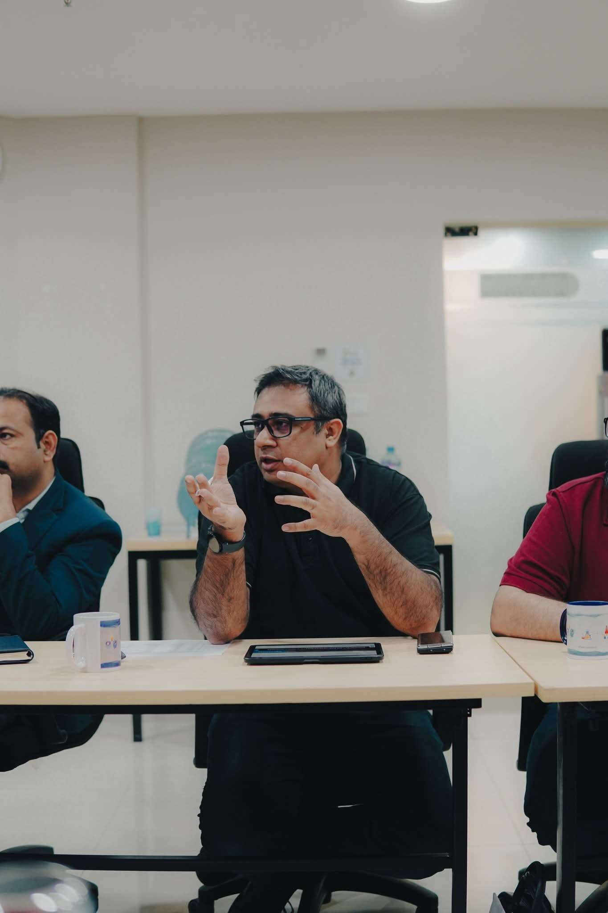
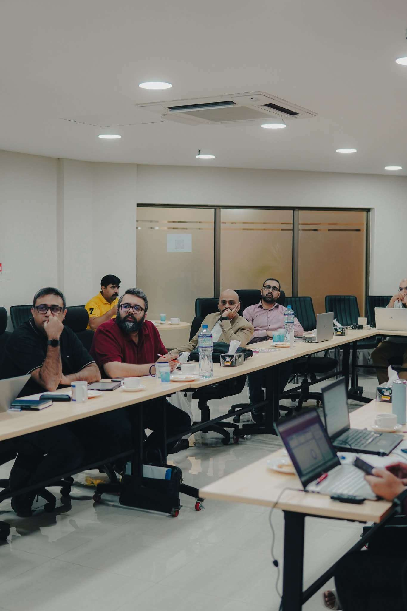
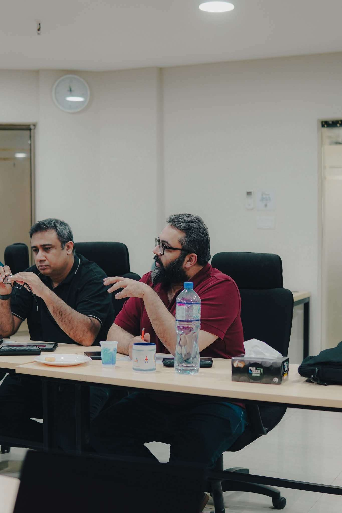

I was honored to be invited as one of 34 judges for the NSTP Hatch 8 Cohort 6 Selection Board, chaired by Director NSTP Engineer Amer Sheikh, PMP.
The three-day selection process was both intensive and inspiring. With over 600 startups applying and only 100 shortlisted to present, the competition was fierce. The selection board comprised representatives from academia, industry, NUST, and NSTP — bringing diverse perspectives to the evaluation process.
What We Evaluated
Each startup pitch was assessed on multiple criteria:
- Technical Capability: The depth of technology and innovation
- Growth Potential: Market opportunity and scalability
- Team Strength: The capability and commitment of the founding team
- Overall Feasibility: Practical execution and business viability

The Ecosystem in Action
What struck me most was the quality and diversity of ideas coming from Pakistani founders. From AI-driven solutions to sustainable agriculture, healthcare tech to fintech innovations — the breadth of entrepreneurial spirit was remarkable.

NSTP's Hatch program continues to be a cornerstone of Pakistan's startup ecosystem, providing not just funding but mentorship, network access, and the infrastructure needed to turn ideas into viable businesses.

Looking Forward
Results from the selection process will be announced following the completion of evaluations. I'm excited to see which startups make it into Cohort 6 and look forward to tracking their growth journeys.
Programs like NSTP Hatch are critical for Pakistan's tech ecosystem. They provide the launchpad that early-stage startups desperately need, and being part of the selection process reinforces my belief in the incredible talent we have in this country.
Stay tuned for the announcement of the selected startups!